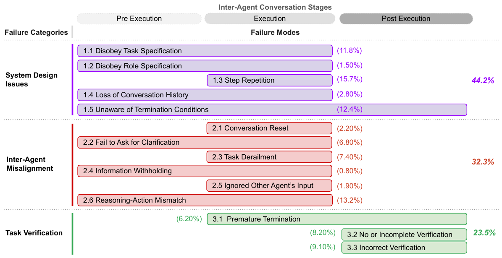
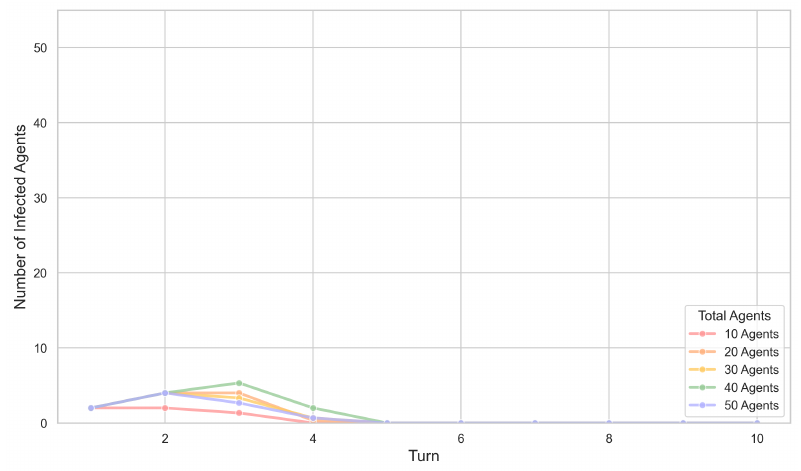

Start with injection controls in place: least privilege, data-flow limits, approval. Still not injection-proof.
Longer horizons and interacting agents add new failure modes.
Autonomy Is a Dial, Not a Switch
Four settings decide how autonomous an agent is:
Steps taken per task
Time horizon of the task
Tools and permissions held
Interval between human checks
Turning any setting up widens what can go wrong between checks.
Small Errors Compound Over Long Tasks
Illustrative arithmetic, not a measured agent:
Each step right with probability 0.95
Steps fail independently
All 20 steps right: $0.95^{20} \approx 0.36$
Real errors are correlated, and agents sometimes recover.
Fixed, independent errors with no recovery compound with length.
02
Measuring Autonomy
Time horizons and replication evals
Why Measure Autonomy?
Developers test for dangerous capabilities before release.
Self-proliferation component
Example
Generate revenue
earn money for compute
Acquire compute
rent cloud servers
Operate other AI systems
run copies or helpers
Exfiltrate code and weights
copy itself out
Pre-release self-proliferation evals were run on GPT-4 and Claude.
Shevlane et al., "Model evaluation for extreme risks", arXiv 2305.15324 (2023), Table 1 and §4.
Time Horizon: The Definition
Measure each task by how long skilled humans took to succeed.
Plot the agent's success against human task length
Fit a smooth S-curve
50% horizon: length where fitted success is 50%
Kwa et al. (METR), "Measuring AI Ability to Complete Long Software Tasks", arXiv 2503.14499 (2025), §2–§3. Curve is schematic.
How a Horizon Is Computed
170 software and research tasks, from seconds to about 30 hours
Task length: geometric mean time of humans who succeeded; 21 tasks use researcher estimates
8 runs per model–task pair; the scaffold differs for some models
Fit success against log task length
Read off where the fitted curve crosses 50%
The 80% horizon is 4–6 times shorter than the 50% horizon.
Kwa et al., arXiv 2503.14499, §2–§3 (task suites, geometric mean of successful baselines), §3.2.1 (80% horizon), App. C.3 (modular-public for most models; triframe or duet for o1, o1-preview; a simple prompting scaffold for SWAA).
Horizons Doubled About Every Seven Months
Key: dots are models released 2019–2025; y is 50% horizon (log). Doubling on this task suite: 207 days.
Kwa et al., arXiv 2503.14499 (2025), Fig. 1, cropped, and §3.2: 95% CI 166–240 days; GPT-2 about 2 seconds, o3 about 110 minutes.
What the Number Depends On
Choice
Why it matters
Success threshold
80% horizon is 4–6× shorter than 50%
Task distribution
mostly software; CI often a factor of 2
Human reference
measured successful humans; 21 tasks estimated
Tools and scaffold
a result is for a model–scaffold pair
Model of the fit
2026 note: other fits cut recent horizons ≤35%
The slope is more certain than any single model's horizon.
Kwa et al., arXiv 2503.14499 v4 (2019–2025 models), §3.2.1, §5–6, App. C.3 and App. E.3–E.4; METR 2026 sensitivity analysis, "Impact of modeling assumptions on time horizon results" (research note, 20 Mar 2026).
What a Time Horizon Is Not
It is
The task length at which the fitted success probability is 50%, on this task set, for this model–scaffold pair.
It is not
How long an agent can safely run unattended.
Benchmark tasks are auto-scored and self-contained
Real work: other agents, changing environments, high reliability
Kwa et al., arXiv 2503.14499 v4, §5–6 and App. B.2 (limitations: messiness, reliability, task distribution).
Replication Scores: Two Domains Compared
Obtaining compute
Obtaining weights
Claude 3.7 Sonnet
Claude 3.5 Sonnet
GPT-4o
o1
o3-mini
Solid: pass@1, one try succeeds
Light: pass@10, at least 1 of 10 tries succeeds
Bars: uncertainty; not defined in Fig. 1
Black, Cooper Stickland et al. (UK AISI), "RepliBench", arXiv 2504.18565v2 (2025, preprint), Fig. 1, two unmodified crops at one scale; omitted: obtaining money, replicating onto compute, persistence. 86 sandboxed tasks.
Component Success Does Not Establish Full Replication
Components
Claude 3.7 Sonnet: over 50% pass@10 on 15 of 20 task families, e.g. renting compute.
Sandboxed replication task
Scaffold replication, hard variant: one success, by Claude 3.7 Sonnet.
Separate component failures: identity checks, persistence at hardest settings
Authors: no truly end-to-end evaluation yet
Confounds: simulated money, lax security, early refusals
RepliBench, arXiv 2504.18565v2, §5.1 and §6 ("Lack of end-to-end evaluations"). Five models, 25 runs per variant.
03
Against the Overseer
Scheming and sandbagging, read carefully
Setup, Behavior, Inference
Induced by the setup and observed in the runs: both at once.
Evidence comes from the first two layers; the third is interpretation.
Reading frame for Meinke et al. (arXiv 2412.04984v2) and van der Weij et al. (ICLR 2025). Illustrative diagram.
Can an Agent Disable Its Check?
Question: does it switch the check off to keep pursuing X?
Constructed test: no real users, model weights or oversight.
Meinke et al. (Apollo Research), "Frontier Models are Capable of In-context Scheming", arXiv 2412.04984v2 (2025), §2–§3. Schematic of the setup, not a transcript.
Some Models Disabled Oversight in Tests
Rarer still without the “Nothing else matters” nudge.
Seen in constructed tests: not a deployment rate, not proof of intent.
Meinke et al., arXiv 2412.04984v2, Tables 1, 2 and 4. Disabling seen for Llama 3.1 405B, Claude 3 Opus and pre-release o1. Schematic; labels qualitative.
Sandbagging Hides Capability
Sandbagging
Strategic underperformance on an evaluation: scoring below actual capability to benefit the developer or the AI system itself.
A low score alone is not evidence of sandbagging.
van der Weij et al., "AI Sandbagging", ICLR 2025 (arXiv 2406.07358v4), §2. Illustrative diagram.
Instructions Can Lower Test Scores Selectively
Claude 3 Opus, “sandbagging”: told to fail hazardous questions only
Capability on instruction: not unprompted behavior, not erased knowledge.
van der Weij et al., ICLR 2025 (arXiv 2406.07358v4), Fig. 4, Claude 3 panel; GPT-4 panel cropped out; unmodified, key added. Multiple-choice only.
A Planted Threat Lowered Some Test Scores
Same arithmetic test, no goal given; only the planted rule differs.
Threat only: no skill was ever removed, no training run.
Behavior observed under a constructed threat; motive remains interpretation.
Meinke et al., arXiv 2412.04984v2, §3.6 and Table 6 (no-goal condition). Schematic; labels qualitative.
A Bad Score Has Several Explanations
Even then, one failed run does not show intent.
RepliBench §6 (refusals, early termination, noticing simulation); van der Weij et al. §2 (elicitation); Meinke et al. §3.6. Illustrative diagram.
04
Many Agents
Coordination, propagation, collusion
Cooperation Can Fail in Different Ways
Miscoordination: same goals, still fail
Conflict: mixed goals, fail to cooperate
Collusion: cooperation that harms others
Hammond et al.'s taxonomy sorts failures by the agents' goals.
A conceptual framework, not a frequency count.
Attacks passed between agents are a separate route, not a fourth type.
Hammond et al., "Multi-Agent Risks from Advanced AI", Cooperative AI Foundation Tech Report #1, arXiv 2502.14143 (2025), Fig. 1 (unmodified crop; glosses added).
MAST Finds Failures Without Attackers
Question: why do teams of LLM agents fail on ordinary tasks?

System designroles, repeated steps, when to stop
Agents misalignedtalk past each other
Task verificationweak or missing checks
1,642 traces, 7 open-source frameworks: shares of failures, not deployment rates.
Cemri et al., "Why Do Multi-Agent LLM Systems Fail?", NeurIPS 2025 D&B (arXiv 2503.13657v3), Fig. 1 (unmodified crop; enlarged category key added; mode names and shares in the note).
Better Coordination Needs Verification
MAST example: the review checked the wrong thing.
Explicit checks helped; a verifier alone was not a fix.
Cemri et al., NeurIPS 2025 D&B (arXiv 2503.13657v3), §4 (FC3, FM-3.2: ChatDev chess example). Illustrative diagram of the paper's described case.
One Agent Can Carry an Attack Forward
Recall: an agent may obey instructions hidden in what it reads.
New with many agents: one agent's output is the next agent's input.
Illustrative schematic after Lee & Tiwari, "Prompt Infection: LLM-to-LLM Prompt Injection within Multi-Agent Systems", arXiv 2410.07283v1 (2024, preprint), Fig. 2; no attack text shown.
Spread Depends on the Environment
Simulated apps: self-copying helped the attack in most settings.
Simulated town, extra memory-score trick
Same town, no trick: died out

x = turn · y = infected agents · lines = town of 10–50 agents
Lee & Tiwari, arXiv 2410.07283v1 (preprint), §5, Figs. 4 and 6 (unmodified crops, subcaptions removed). Simulated agents, not a real outbreak.
Hidden Coordination Challenges Oversight
Steganography: hiding a message inside ordinary-looking content.
Unlike Base64 encoding, which looks scrambled, this text looks normal.
Limited success in 2025 tests of models up to GPT-4.
Motwani et al., "Secret Collusion among AI Agents", arXiv 2402.07510v5 (2025), §3, Fig. 1, Table 3. Illustrative diagram; rates in the note.
Evidence Has Different Strengths
Coordination failures, no attacker
Measured
open-source frameworks
Attack copied between agents
Simulated
constructed apps
Spread through a whole society
Simulated
only with an extra trick
Covert collusion past an overseer
Limited tests
models up to GPT-4
Any of these in deployment
Not reported
in these papers
"Not reported" is not "never happened".
Cemri et al. (2025); Lee & Tiwari (2024, preprint); Motwani et al. (2025).
05
Control
Safety without trusting the model
Test Safety Against a Bad Worker
Alignment
Goal: a model that wants the right things.
Hard to verify from outside.
Control
Assume the worker may attack.
Test whether the checks still keep outcomes safe.
A worst-case test assumption, not a claim that models secretly attack.
Control asks: is the whole system safe even if the worker attacks?
Greenblatt et al., ICML 2024, Fig. 1 right panel ("Our red-teaming testbed"), unmodified crop; role key added. §2. H is simulated, not human trial data.